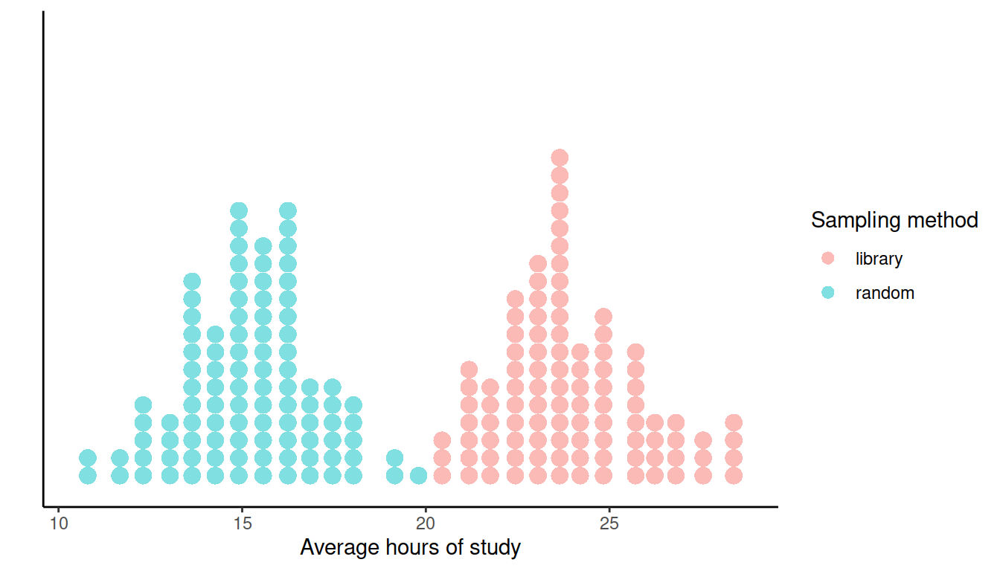

Sampling distributions
LEARNING OBJECTIVES
- Recognise the difference between parameters and statistics
- Be able to use a sample statistic to estimate an unknown parameter
- Understand what a sampling distribution is
- Understand the concept of standard error
- Recognise why sample size matters
Parameters and statistics
We can think of random or unpredictable data as arising in two ways. The first one involves sampling from a finite population and measuring characteristics of the individuals chosen in the sample. An example of this are surveys and polls. The second approach involves a random process producing observations. An example of this is a production line for which we measure some characteristic of each produced item. Here, the underlying population is conceptual rather than real, and is the one that would be produced if the process was repeated a large number of times.
Both ways lead to a random observation possessing a distribution describing how the observation will vary. Numerical summaries of that distribution are called parameters. Examples are the mean \(\mu = E(X)\) of the distribution, the standard deviation \(\sigma = SD(X)\), or a population proportion \(p\).
If we are sampling the population of Scotland, we might be interested in \(\mu\), the mean self-reported happiness level, or \(p\), the proportion of vaccinated people.
Parameters
A parameter is a numerical summary of a population or distribution, for example the average income in the whole population.
In practice, we know very little about the population we are sampling from (or the random process generating our data) and we collect data to find out more about these populations. Therefore the parameters of interest are unknown quantities that we want to estimate.
Consider again the population proportion of vaccinated people, \(p\). If this is the quantity we are interested in, the obvious approach would be to take a sample from that population and use the proportion vaccinated in the sample, \(\hat{p}\), as an estimate of \(p\).
To estimate the fault proportion \(p\) in a light bulb production line, we can take some of the light bulb produced (i.e. a sample) and use the proportion of faulty light bulbs in the sample \(\hat p\) as an estimate of the underlying proportion of faulty light bulbs \(p\) for the production process.
Statistic
A statistic is a numerical summary of the sample.
A (sample) statistic is often used to estimate a (population) parameter.
From the above discussion, you can see that the population parameter and the sample statistic generally have the same name. However, these are often written with different symbols to convey with just one letter:
- what summary they represent;
- if it is a population quantity or a quantity computed on a sample.
The following table summarizes standard notation for some population parameters, typically unknown, and the corresponding estimates computed on a sample.
| Numerical summary | Population parameter | Sample statistic |
|---|---|---|
| Mean | \(\mu\) | \(\bar{x}\) or \(\hat{\mu}\) |
| Standard deviation | \(\sigma\) | \(s\) or \(\hat{\sigma}\) |
| Proportion | \(p\) | \(\hat{p}\) |
The Greek letter \(\mu\) (mu) represents the population mean (parameter), while \(\bar{x}\) (x-bar) or \(\hat{\mu}\) (mu-hat) is the mean computed from the sample data (sample statistic).
The Greek letter \(\sigma\) (sigma) represents the population standard deviation (parameter), while \(s\) or \(\hat{\sigma}\) (sigma-hat) is the standard deviation computed from the sample data (sample statistic).
The Getter \(p\) represents the population proportion (parameter), while \(\hat{p}\) (p-hat) is the proportion computed from the sample data (sample statistic).
The process of sampling \(n\) people from the population is a random process. An outcome of this random process is a sample of size \(n\). For each sample, we can calculate a statistic (e.g., the mean \(\bar x\)). Hence, a statistic is a numerical summary of a random experiment and for this reason it is a random variable, e.g. the mean denoted \(\bar X\).
Throughout the exercises we will use the following notation:
Uppercase letters refer to random variables
Lowercase letters refer to observed values
We use uppercase letters when we want to study the effects of sampling variation on a statistic, while we use lowercase letters for observed values.
TERMINOLOGY
Statisticians often refer to the observed number in the sample as the estimate (\(\bar x\)). This is just another way of saying a statistic which used to estimate a population parameter.
They also sometimes call estimator the random variable (\(\bar X\)) which the observed number is a realisation of.
Avoiding sampling bias
Sampling bias occurs when the method used to select which units enter the sample causes the sample to not be a good representation of the population.
If sampling bias exists, we cannot generalise our sample conclusions to the population.
To be able to draw conclusions about the population, we need a representative sample. The key in choosing a representative sample is random sampling. Imagine an urn with tickets, where each ticket has the name of each population unit. Random sampling would involve mixing the urn and blindly drawing out some tickets from the urn. Random sampling is a strategy to avoid sampling bias.
Simple random sampling
When we select the units entering the sample via simple random sampling, each unit in the population has an equal chance of being selected, meaning that we avoid sampling bias.
When instead some units have a higher chance of entering the same, we have misrepresentation of the population and sampling bias.
In general, we have bias when the method of collecting data causes the data to inaccurately reflect the population.
Sampling distribution
The natural gestation period (in days) for human births is normally distributed in the population with mean 266 days and standard deviation 16 days. This is a special case which rarely happens in practice: we actually know what the distribution looks like in the population.
We will use this unlikely example to study how well does the sample mean estimate the population mean and, to do so, we need to know what the population mean is so that we can compare the estimate and the true value. Remember, however, that in practice the population parameter would not be known.
We will consider data about the gestation period of the 49,863 women who gave birth in Scotland in 2019. These can be found at the following address: https://uoepsy.github.io/data/pregnancies.csv
First, we read the population data:
library(tidyverse)
gest <- read_csv('https://uoepsy.github.io/data/pregnancies.csv')
dim(gest)## [1] 49863 2The data set contains information about 49,863 cases. For each case an identifier and the length of pregnancy Look at the top six rows of the data set (the “head”):
head(gest)## # A tibble: 6 x 2
## id gest_period
## <dbl> <dbl>
## 1 1 256.
## 2 2 269.
## 3 3 253.
## 4 4 292.
## 5 5 271.
## 6 6 253.Let’s load a function which we prepared for you called rep_sample_n(). This function is used to repeatedly sample \(n\) units from the population.
To get the function in your computer, run this code:
source('https://uoepsy.github.io/files/rep_sample_n.R')NOTE
You need to copy and paste the line
source('https://uoepsy.github.io/files/rep_sample_n.R')into each file where you want to use the rep_sample_n() function.
The function takes the following arguments:
rep_sample_n(data, n = <sample size>, samples = <how many samples>)datais the populationnis the sample sizesamplesis how many samples of size \(n\) you want to take
Before doing anything involving random sampling, it is good practice to set the random seed. This is to ensure reproducibility of the results. Random number generation in R works by specifying a starting seed, and then numbers are generated starting from there.
Set the random seed to any number you wish. Depending on the number, you will get the same results as me or not:
set.seed(1234)Obtain 12 samples of \(n = 6\) individuals each:
samples <- rep_sample_n(gest, n = 6, samples = 12)
samples## # A tibble: 72 x 3
## sample id gest_period
## <dbl> <dbl> <dbl>
## 1 1 40784 255.
## 2 1 40854 275.
## 3 1 41964 281.
## 4 1 15241 246.
## 5 1 33702 247.
## 6 1 35716 267.
## 7 2 17487 289.
## 8 2 15220 266.
## 9 2 19838 238.
## 10 2 2622 281.
## # … with 62 more rowsThe samples data frame contains 3 columns:
sample, telling us which sample each row refers toid, telling us the units chosen to enter each samplegest_period, telling us the gestation period (in days) of each individual
Note that the tibble samples has 72 rows, which is given by 6 individuals in each sample * 12 samples.
You can inspect the sample data in the following interactive table in which the data corresponding to each sample have been colour-coded so that you can distinguish the rows belonging to the 1st, 2nd, …, and 12th sample:
Now, imagine computing the mean of the six observation in each sample. This will lead to 12 means, one for each of the 12 samples (of 6 individuals each).
sample_means <- samples %>%
group_by(sample) %>%
summarise(mean_gest = mean(gest_period))
sample_means## # A tibble: 12 x 2
## sample mean_gest
## <dbl> <dbl>
## 1 1 262.
## 2 2 262.
## 3 3 273.
## 4 4 267.
## 5 5 271.
## 6 6 253.
## 7 7 261.
## 8 8 260.
## 9 9 269.
## 10 10 277.
## 11 11 270.
## 12 12 261.As you can see this leads to a tibble having 12 rows (one for each sample), where each row is a mean computed from the six individuals which were chosen to enter the sample.
This sample has a mean of \(\bar x\) = 261.95 days.
The second sample has a mean gestation period of \(\bar x\) = 262.3 days.
In Figure 1 we display the individual gestation periods in each sample as dots, along with the means gestation period \(\bar x\) of each sample. The position of the sample mean is given by a red vertical bar.
We then increased the sample size to 24 women and took 12 samples each of 24 individuals. This set of samples together with their means is also plotted in Figure 1.
Figure 1: Gestation period (in days) of samples of individuals.
Two important points need to be made from Figure 1. First, each sample (and therefore each sample mean) is different. This is due to the randomness of which individuals end up being in each sample. The sample means, \(\bar x\), vary in an unpredictable way, illustrating the fact that \(\bar X\) is a summary of a random process (randomly choosing a sample) and hence is a random variable. Secondly, as we increase the sample size from 6 to 24, there appears to be a decrease in the variability of sample means (compare the variability in the vertical bars in panel (a) and panel(b)).
To further investigate the variability of sample means, we will now generate many more sample means computed on:
- 5,000 samples of \(n = 6\) women
- 5,000 samples of \(n = 24\) women
- 5,000 samples of \(n = 100\) women
# (a) 5,000 means from 5,000 samples of 6 women
sample_means_6 <- rep_sample_n(gest, n = 6, samples = 5000) %>%
group_by(sample) %>%
summarise(mean_gest = mean(gest_period))
# (b) 5,000 means from 5,000 samples of 24 women
sample_means_24 <- rep_sample_n(gest, n = 24, samples = 5000) %>%
group_by(sample) %>%
summarise(mean_gest = mean(gest_period))
# (c) 5,000 means from 5,000 samples of 100 women
sample_means_100 <- rep_sample_n(gest, n = 100, samples = 5000) %>%
group_by(sample) %>%
summarise(mean_gest = mean(gest_period))We now combine the above datasets of sample means for different sample sizes into a unique tibble. Before doing so, we add a column specifying the sample size. Remember that mutate() takes a tibble and adds or changes a column. The function bind_rows() takes multiple tibbles and stacks them under each other.
sample_means_n <- bind_rows(
sample_means_6 %>% mutate(n = 6),
sample_means_24 %>% mutate(n = 24),
sample_means_100 %>% mutate(n = 100)
)We now plot three different density histograms showing the distribution of 5,000 sample means computed from samples of size 6, 24, and 100.
This would correspond to creating a histogram of the “red vertical bars” from Figure 1, the only difference is that we have many more samples (5,000).
ggplot(sample_means_n) +
geom_histogram(aes(mean_gest, after_stat(density)), color = 'white', binwidth = 1) +
facet_grid(n ~ ., labeller = label_both) +
theme_bw() +
labs(x = 'Sample mean of gestation period (days)', y = 'Density')Figure 2: Density histograms of the sample means from 5,000 samples of women (\(n\) women per sample).
Each of the density histograms above displays the distribution of the sample mean, computed on samples of the same size and from the same population.
Such a distribution is called the sampling distribution of the sample mean.
Sampling distribution
The sampling distribution of a statistic is the distribution of a sample statistic computed on many different samples of the same size from the same population.
A sampling distribution shows how the statistic varies from sample to sample due to sampling variation.
Centre and spread of the sampling distribution
What is the mean and standard deviation of each histogram?
sample_means_n %>%
group_by(n) %>%
summarise(mean_xbar = mean(mean_gest),
sd_xbar = sd(mean_gest))## # A tibble: 3 x 3
## n mean_xbar sd_xbar
## <dbl> <dbl> <dbl>
## 1 6 266. 6.51
## 2 24 266. 3.30
## 3 100 266. 1.62Compare these quantities to the population mean and standard deviation: \(\mu\) = 266 and \(\sigma\) = 16.1.
Regardless of the size of the samples we were drawing (6, 24, or 100), the average of the sample means was equal to the population mean. However, the standard deviation of the sample means was smaller than the population mean. The variability in sample means also decreases as the sample size increases.
There is an interesting patter in the decrease, which we will now verify. It can be proved that the standard deviation of the sample mean \(\sigma_{\bar X} = \frac{\sigma}{\sqrt{n}}\), i.e. the population standard deviation divided by \(\sqrt{n}\) with \(n\) being the sample size.
sigma <- sd(gest$gest_period)
sample_means_n %>%
group_by(n) %>%
summarise(mean_xbar = mean(mean_gest),
sd_xbar = sd(mean_gest)) %>%
mutate(sd_theory = sigma / sqrt(n))## # A tibble: 3 x 4
## n mean_xbar sd_xbar sd_theory
## <dbl> <dbl> <dbl> <dbl>
## 1 6 266. 6.51 6.57
## 2 24 266. 3.30 3.28
## 3 100 266. 1.62 1.61The last two columns will be closer and closer as we increase the number of different samples we take from the population (e.g. 5,000 or 10,000 or even more samples.)
The following result holds: \[ \begin{aligned} \mu_{\bar X} &= \mu = \text{Population mean} \\ \sigma_{\bar X} &= \frac{\sigma}{\sqrt{n}} = \frac{\text{Population standard deviation}}{\sqrt{\text{Sample size}}} \end{aligned} \]
Because on average the sample mean (i.e. the estimate) is equal to the population mean (i.e. the parameter), the sample mean \(\bar X\) is an unbiased estimator of the population mean. In other words, it does not consistently “miss” the target. (However, if your sampling method is biased, the sample mean will be biased too.)
The standard deviation of the sample means tells us that the variability in the sample means gets smaller smaller as the sample size increases. Because \(\sqrt{4} = 2\) we halve \(\sigma_{\bar X}\) by making the sample size 4 times as large. Similarly, as \(\sqrt{9} = 3\), we reduce \(\sigma_{\bar X}\) by one third by making the sample size 9 times as large.
The variability, or spread, of the sampling distribution shows how much the sample statistics tend to vary from sample to sample. This is key in understanding how accurate our estimate of the population parameter, based on just one sample, will be.
Recall that the standard deviation tells us the size of a typical deviation from the mean. Here, the mean is the population parameter \(\mu\), and a deviation of \(\bar x\) from \(\mu\) is called an estimation error. Hence, the standard deviation of the sample mean is called the standard error of the mean. This tells us the typical estimation error that we commit when we estimate a population mean with a sample mean.
Standard error
The standard error of a statistic, denoted \(SE\), is the standard deviation of its sampling distribution.
So, the standard error of the mean can be either computed as the standard deviation of the sampling distribution, or using the formula \[ SE = \sigma_{\bar X} = \frac{\sigma}{\sqrt{n}} \]
The sample mean is normally distributed
We also notice that the density histograms in Figure 2 are symmetric and bell-shaped. Hence, they follow the shape of the normal curve.
The random variable \(\bar X\) follows a normal distribution: \[ \bar X \sim N(\mu,\ SE) \]
We can also compute a z-score. We have that: \[ \frac{\bar X - \mu}{SE} \sim N(0, 1) \]
We know that for a normally distributed random variable, approximately 95% of all values fall within two standard deviations of its mean. Thus, for approximately 95% of all samples, the sample means falls within \(\pm 2 SE\) of the population mean \(\mu\). Similarly, since \(P(-3 < Z < 3) = 0.997\), it is even more rare to get a sample mean which is more than three standard errors away from the population mean (only 0.3% of the times).
This suggests that:
The standard error \(SE\) is a measure of precision of \(\bar x\) as an estimate of \(\mu\).
If is a pretty safe bet to say that the true value of \(\mu\) lies somewhere between \(\bar x - 2 SE\) and \(\bar x + 2 SE\).
We will doubt any hypothesis specifying that the population mean is \(\mu\) when the value \(\mu\) is more than \(2 SE\) away from the sample mean we got from our data, \(\bar x\). We shall be even more suspicious when the hypothesised value \(\mu\) is more than \(3 SE\) away from \(\bar x\).
Centre and shape of a sampling distribution
Centre: If samples are randomly selected, the sampling distribution will be centred around the population parameter. (No bias)
Shape: For most of the statistics we consider, if the sample size is large enough, the sampling distribution will follow a normal distribution, i.e. it is symmetric and bell-shaped. (Central Limit Theorem)
Clearly, we can compute sampling distributions for other statistics too: the proportion, the standard deviation, …
This requires the following steps:
Obtaining multiple samples, all of the same size, from the same population;
For each sample, calculate the value of the statistic;
Plot the distribution of the computed statistics.
Why sample size matters
You might be wondering: why did we take multiple samples of size \(n\) from the population when, in practice, we can only afford to take one?
This is a good question. We have taken multiple samples to show how the estimation error varies with the sample size. We saw in Figure 2, shown again below, that smaller sample sizes lead to more variable statistics, while larger sample sizes lead to more precise statistics, i.e. the estimates are more concentrated around the true parameter value.

Figure 3: Density histograms of the sample means from 5,000 samples of women (\(n\) women per sample).
This teaches us that, when we have to design a study, it is better to obtain just one sample with size \(n\) as large as we can afford.
What would the sampling distribution of the mean look like if we could afford to take samples as big as the entire population, i.e. of size \(n = N\)?
To summarize:
We have high precision when the estimates are less variable, and this happens for a large sample size.
We have no bias when we select samples that are representative of the population, and this happens when we do random sampling. No bias means that the estimates will be centred at the true population parameter to be estimated.
Glossary
- Statistical inference. The process of drawing conclusions about the population from the data collected in a sample.
- Population. The entire collection of units of interest.
- Sample. A subset of the entire population.
- Random sample. A subset of the entire population, picked at random, so that any conclusion made from the sample data can be generalised to the entire population.
- Representation bias. Happens when some units of the population are systematically underrepresented in samples.
- Generalisability. When information from the sample can be used to draw conclusions about the entire population. This is only possible if the sampling procedure leads to samples that are representative of the entire population (such as those drawn at random).
- Parameter. A fixed but typically unknown quantity describing the population.
- Statistic. A quantity computed on a sample.
- Sampling distribution. The distribution of the values that a statistic takes on different samples of the same size and from the same population.
- Standard error. The standard error of a statistic is the standard deviation of the sampling distribution of the statistic.
Exercises
Two students, Mary and Alex, wanted to investigate the average hours of study per week among students in their university. Each were given the task to sample \(n = 20\) students many times, and compute the mean of each sample of size 20. Mary sampled the students at random, while Alex asked students from the library. The distribution of sample means computed by Mary and Alex are shown in the dotplot below in green and red, respectively.

What do you notice in the distributions above? Why did Mary and Alex get so different results?
Average price of goods sold by ACME Corporation
Suppose you work for a company that is interested in buying ACME Corporation1 and your boss wants to know within the next 30 minutes what is the average price of goods sold by that company and how the prices of the goods they sell differ from each other.
Since ACME Corporation has such a big mail order catalogue, see Figure 4, we will assume that the company sells many products. Furthermore, we only have the catalogue in paper-form and no online list of prices is available.
Figure 4: Product catalogue of ACME corporation.
- Identify the population of interest and the population parameters.
- Can we compute the parameters within the next 30 minutes?
- How would you proceed in estimating the population parameters if you just had time to read through 100 item descriptions? Would you pick the first 100 items or would you pick 100 random page numbers?
- State which statistics you would use to estimate the population parameters.
What is a parameter? Give two examples of parameters.
What is a statistic? Give two example of statistics.
What is an estimate?
What is the distinction between an estimate and an estimator?
Why is it made? What notational device is used to communicate the distinction?
Reading data into R
Read the Hollywood movies data into R, and call it hollywood.
Check that the data were read into R correctly.
Extracting relevant variables
Extract from the hollywood tibble the three variables of interest (Movie, Genre, Budget) and keep the movies for which we have all information (no missing entries).
Hint: Check the help page for the function drop_na() or na.omit().
Proportion of comedy movies
What is the population proportion of comedy movies? What is an estimate of the proportion of comedy movies using a sample of size 20? Using the appropriate notation, report your results in one or two sentences.
Sampling distributions
What is a sampling distribution?
Sampling distribution of the proportion
Compute the sampling distribution of the proportion of comedy movies for samples of size \(n = 20\), using 1000 different samples.
Is it centred at the population value?
Standard error
Using the replicated samples from the previous question, what is the standard error of the sample proportion of comedy movies?
The effect of sample size on the standard error of the sample proportion
How does the sample size affect the standard error of the sample proportion? Compute the sampling distribution for the proportion of comedy movies using 1,000 samples each of size \(n = 20\), \(n = 50\), and \(n = 200\) respectively.

Comparing the budget for action and comedy movies
What is the population average budget (in millions of dollars) allocated for making action vs comedy movies? And the standard deviation?
You might remember it from the cartoon Wile E. Coyote and the Road Runner.↩︎